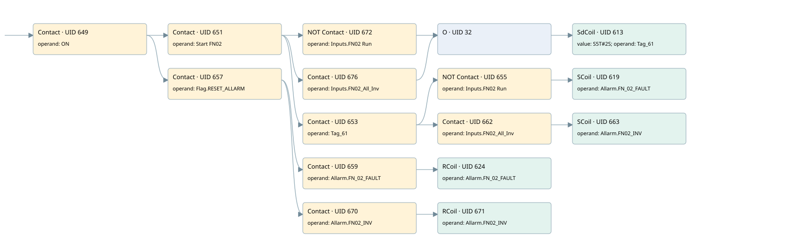

fn02
allarms 1 · 검색 색인 순서 16 · 원본 내부 NID 추정 18
백업 PLF 원본의 3046777 바이트 위치에서 복원한 XML. 검색 문서 1796의 객체 키 161022006262000000000000와 연결했다. 이름 해석 16/16개. 남은 RefId는 상수 또는 미해석 참조다.
연결 구조 다시 그리기
원본 Part/PCon/Wire를 이용한 연결도다. TIA 화면의 래더 배치 또는 실행 결과를 재현한 그림은 아니다. 핀 연결은 아래 표와 원본 XML을 기준으로 읽는다. 노드 위에 마우스를 두면 피연산자 이름을 볼 수 있다.

접점·코일·블록과 피연산자
| Part UID | Gate | Negated 핀 | 연결 피연산자 |
|---|---|---|---|
| 649 | Contact | operand = ON | |
| 651 | Contact | operand = Start FN02 | |
| 672 | Contact | operand | operand = Inputs.FN02 Run |
| 676 | Contact | operand = Inputs.FN02_All_Inv | |
| 32 | O | ||
| 613 | SdCoil | value = S5T#2S; operand = Tag_61 | |
| 653 | Contact | operand = Tag_61 | |
| 655 | Contact | operand | operand = Inputs.FN02 Run |
| 619 | SCoil | operand = Allarm.FN_02_FAULT | |
| 662 | Contact | operand = Inputs.FN02_All_Inv | |
| 663 | SCoil | operand = Allarm.FN02_INV | |
| 657 | Contact | operand = Flag.RESET_ALLARM | |
| 659 | Contact | operand = Allarm.FN_02_FAULT | |
| 624 | RCoil | operand = Allarm.FN_02_FAULT | |
| 670 | Contact | operand = Allarm.FN02_INV | |
| 671 | RCoil | operand = Allarm.FN02_INV |
접점 경로를 펼친 조건식
Contact·O/A·비교기의 원본 연결을 읽기 쉽게 펼친 보조 해석이다. POWER는 전원 레일 시작을 뜻한다. 호출 블록·에지·타이머의 내부 동작과 다중 쓰기 순서는 이 표로 실행 검증하지 않았다. 미해석 핀과 RefId는 원문 연결표에서 확인한다.
| UID | 동작 | 대상 | 원본 접점 경로 | 내용 |
|---|---|---|---|---|
| 613 | SdCoil | Tag_61 | (((ON AND Start FN02) AND NOT [Inputs.FN02 Run]) OR ((ON AND Start FN02) AND Inputs.FN02_All_Inv)) | 시간 동작 SdCoil; 타이머 의미 추가 확인 / 시간 인자 S5T#2S |
| 619 | SCoil | Allarm.FN_02_FAULT | (((ON AND Start FN02) AND Tag_61) AND NOT [Inputs.FN02 Run]) | 조건 성립 시 Set |
| 663 | SCoil | Allarm.FN02_INV | (((ON AND Start FN02) AND Tag_61) AND Inputs.FN02_All_Inv) | 조건 성립 시 Set |
| 624 | RCoil | Allarm.FN_02_FAULT | ((ON AND Flag.RESET_ALLARM) AND Allarm.FN_02_FAULT) | 조건 성립 시 Reset |
| 671 | RCoil | Allarm.FN02_INV | ((ON AND Flag.RESET_ALLARM) AND Allarm.FN02_INV) | 조건 성립 시 Reset |
원본 배선 연결
| Wire UID | 동일 Wire 연결 끝점 |
|---|---|
| 661 | Powerrail {} ↔ Part 649.in |
| 635 | ORef 625 (ON) ↔ Part 649.operand |
| 650 | Part 649.out ↔ Part 651.in ↔ Part 657.in |
| 636 | ORef 626 (Start FN02) ↔ Part 651.operand |
| 652 | Part 651.out ↔ Part 672.in ↔ Part 676.in ↔ Part 653.in |
| 675 | ORef 673 (Inputs.FN02 Run) ↔ Part 672.operand |
| 23 | Part 672.out ↔ Part 32.in1 |
| 679 | ORef 677 (Inputs.FN02_All_Inv) ↔ Part 676.operand |
| 33 | Part 676.out ↔ Part 32.in2 |
| 34 | Part 32.out ↔ Part 613.in |
| 637 | ORef 627 (S5T#2S) ↔ Part 613.value |
| 638 | ORef 628 (Tag_61) ↔ Part 613.operand |
| 639 | ORef 629 (Tag_61) ↔ Part 653.operand |
| 21 | Part 653.out ↔ Part 655.in ↔ Part 662.in |
| 640 | ORef 630 (Inputs.FN02 Run) ↔ Part 655.operand |
| 656 | Part 655.out ↔ Part 619.in |
| 642 | ORef 631 (Allarm.FN_02_FAULT) ↔ Part 619.operand |
| 30 | ORef 31 (Inputs.FN02_All_Inv) ↔ Part 662.operand |
| 29 | Part 662.out ↔ Part 663.in |
| 669 | ORef 665 (Allarm.FN02_INV) ↔ Part 663.operand |
| 644 | ORef 632 (Flag.RESET_ALLARM) ↔ Part 657.operand |
| 22 | Part 657.out ↔ Part 659.in ↔ Part 670.in |
| 645 | ORef 633 (Allarm.FN_02_FAULT) ↔ Part 659.operand |
| 660 | Part 659.out ↔ Part 624.in |
| 647 | ORef 634 (Allarm.FN_02_FAULT) ↔ Part 624.operand |
| 24 | ORef 25 (Allarm.FN02_INV) ↔ Part 670.operand |
| 26 | Part 670.out ↔ Part 671.in |
| 27 | ORef 28 (Allarm.FN02_INV) ↔ Part 671.operand |
식별자 해석 근거 16개
| ORef UID | RefId | 이름 | IdentXmlPart 파일 | 해석 방법 |
|---|---|---|---|---|
| 625 | 1 | ON | 0658-IdentXmlPart.xml | UID/RID + search-text + NID agreement |
| 626 | 73 | Start FN02 | 0658-IdentXmlPart.xml | UID/RID + search-text + NID agreement |
| 673 | 282 | Inputs.FN02 Run | 0657-IdentXmlPart.xml | UID/RID + search-text + NID agreement |
| 677 | 283 | Inputs.FN02_All_Inv | 0657-IdentXmlPart.xml | UID/RID + search-text + NID agreement |
| 628 | 74 | Tag_61 | 0658-IdentXmlPart.xml | UID/RID + search-text + NID agreement |
| 627 | 28 | S5T#2S | 0656-IdentXmlPart.xml | literal candidate: UID/RID/NID + nearby named declarations + search-text agreement |
| 629 | 74 | Tag_61 | 0658-IdentXmlPart.xml | UID/RID + search-text + NID agreement |
| 630 | 282 | Inputs.FN02 Run | 0657-IdentXmlPart.xml | UID/RID + search-text + NID agreement |
| 631 | 76 | Allarm.FN_02_FAULT | 0657-IdentXmlPart.xml | UID/RID + search-text + NID agreement |
| 31 | 283 | Inputs.FN02_All_Inv | 0657-IdentXmlPart.xml | UID/RID + search-text + NID agreement |
| 665 | 221 | Allarm.FN02_INV | 0657-IdentXmlPart.xml | UID/RID + search-text + NID agreement |
| 632 | 13 | Flag.RESET_ALLARM | 0657-IdentXmlPart.xml | UID/RID + search-text + NID agreement |
| 633 | 76 | Allarm.FN_02_FAULT | 0657-IdentXmlPart.xml | UID/RID + search-text + NID agreement |
| 634 | 76 | Allarm.FN_02_FAULT | 0657-IdentXmlPart.xml | UID/RID + search-text + NID agreement |
| 25 | 221 | Allarm.FN02_INV | 0657-IdentXmlPart.xml | UID/RID + search-text + NID agreement |
| 28 | 221 | Allarm.FN02_INV | 0657-IdentXmlPart.xml | UID/RID + search-text + NID agreement |
검색 코드 보조 자료
참조 명칭을 찾기 위한 자료이며 실행 순서나 AND/OR 관계는 위 연결표로 확인한다.
"on" "start fn02" "inputs"."fn02 run" "tag_61" s5t#2s "flag".reset_allarm "allarm".fn_02_fault "allarm".fn_02_fault "allarm".fn02_inv "allarm".fn02_inv "inputs".fn02_all_inv "tag_61" "inputs"."fn02 run" "allarm".fn_02_fault "inputs".fn02_all_inv "allarm".fn02_inv